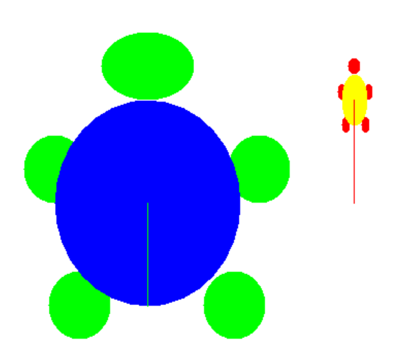

Part 4: Custom Turtles Challenge
Groupwork | Custom TurtlesWorking in pairs, you will now look at a new class called CustomTurtle and design some colorful turtles with its constructors.
The CustomTurtle class in the ActiveCode below inherits many of its attributes and methods from the Turtle class.
However, it has some new constructors with more parameters to customize a turtle with its body color, shell color, width, and height.

Custom Turtles
CustomTurtle has 3 constructors/** Constructs a CustomTurtle in the middle of the world */
public CustomTurtle(World w)
/** Constructs a CustomTurtle with a specific body color,
shell color, and width and height in the middle of the world */
public CustomTurtle(World w, Color body, Color shell, int w, int h)
/** Constructs a CustomTurtle with a specific body color,
shell color, and width and height at position (x,y) in the world */
public CustomTurtle(int x, int y, World w, Color body, Color shell, int w, int h)You will use the constructor(s) to create the CustomTurtles below.
You can specify colors like Color.red by using the Color class in Java.
150x200 CustomTurtle with a green body (Color.green) and a blue shell (Color.blue) at position (150,300).25x50 CustomTurtle with a red body and a yellow shell at position (350,200).activecode:: challenge-CustomTurtlesUse the CustomTurtle constructors to create the following turtles.
Datafile: turtleClasses.jar
Keep the starter shape. Add the constructor calls in main, then move each turtle forward to see it.
challenge-CustomTurtlesimport java.awt.*;
import java.util.*;
public class CustomTurtleRunner
{
public static void main(String[] args)
{
World world1 = new World(400, 400);
// TODO 1. Change the constructor call below to create a large
// 150x200 CustomTurtle with a green body (Color.green)
// and a blue shell (Color.blue) at position (150,300).
// Move it forward to see it.
CustomTurtle turtle1 = new CustomTurtle(world1);
turtle1.forward();
// TODO 2. Create a small 25x50 CustomTurtle with a red body
// and a yellow shell at position (350,200)
// Move it forward to see it.
// TODO 3. Create a CustomTurtle of your own design
world1.show(true);
}
}
class CustomTurtle extends Turtle
{
private int x;
private int y;
private World w;
private Color bodycolor;
private Color shellcolor;
private int width;
private int height;
/**
* Constructor that takes the model display
*
* @param modelDisplay the thing that displays the model or world
*/
public CustomTurtle(ModelDisplay modelDisplay)
{
// let the parent constructor handle it
super(modelDisplay);
}
/**
* Constructor that takes the model display to draw it on and custom
* colors and size
*
* @param m the world
* @param body : the body color
* @param shell : the shell color
* @param w: width
* @param h: height
*/
public CustomTurtle(
ModelDisplay m, Color body, Color shell, int w, int h)
{
// let the parent constructor handle it
super(m);
bodycolor = body;
setBodyColor(body);
shellcolor = shell;
setShellColor(shell);
height = h;
width = w;
setHeight(h);
setWidth(w);
}
/**
* Constructor that takes the x and y and a model display to draw it on
* and custom colors and size
*
* @param x the starting x position
* @param y the starting y position
* @param m the world
* @param body : the body color
* @param shell : the shell color
* @param w: width
* @param h: height
*/
public CustomTurtle(
int x,
int y,
ModelDisplay m,
Color body,
Color shell,
int w,
int h)
{
// let the parent constructor handle it
super(x, y, m);
bodycolor = body;
setBodyColor(body);
shellcolor = shell;
setShellColor(shell);
height = h;
width = w;
setHeight(h);
setWidth(w);
}
}Use the third constructor when the task gives a position, body color, shell color, width, and height.
The first two arguments are the starting position (x, y).
The World argument comes before the body color, shell color, width, and height.
Runestone checks that the code contains a constructor for a large 150x200 CustomTurtle with a green body and a blue shell at position (150,300) in world1.
Runestone checks that the code contains a constructor for a small 25x50 CustomTurtle with a red body and a yellow shell at position (350,200) in world1.
x, y, world1, body color, shell color, width, and height in the correct orderCustomTurtle class definitions unchangedCustomTurtle design with valid constructor argumentsNext topic: 1.14 Calling Instance Methods.